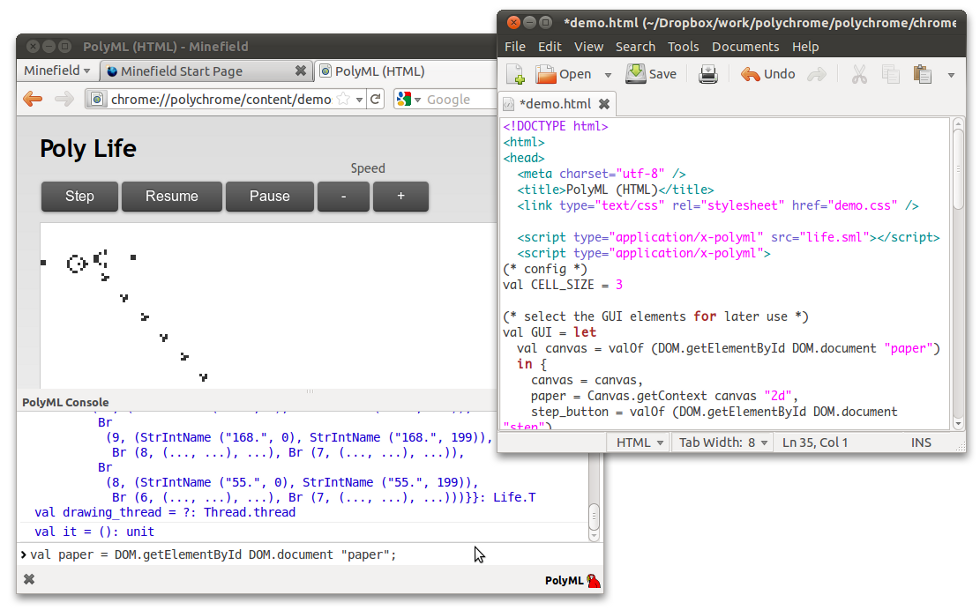

PolyChrome
PolyChrome is an extension for Firefox web browser that can run Standard ML programs embedded in HTML documents. The extension provides a simple foreign function interface to JavaScript. As a result, JavaScript libraries and interfaces provided by the browser, such as DOM and Canvas, can be used from Standard ML.
Why do this?
- HTML, CSS and browser technologies such as Canvas or Scalabble Vector Graphics support provide Standard ML with a way of creating Graphical User Interfaces or graphics in general.
- Easy deployment of SML applications. If PolyML and PolyChrome is installed, opening the URL (remote or local) of the application is all it takes to run it.
- Cross-platform GUIs (though Windows currently are not supported :)
What are the limitations?
- The JavaScript FFI is rather inefficient therefore applications using this FFI intensively, e.g. rendering animations, might be slow.
- The memory sharing mechanism between JavaScript and Standard ML is not fully automated, which means that some manual memory management might be needed to prevent memory leaks.
- Running remote applications is potentially harmful (as there are currently no limits on what SML can be executed on the client's machine).
How does it work?
- The JavaScript component of the extension that is executed by Firefox opens up a PolyML process for each HTML document and runs the Standard ML component of the extension.
- A socket connection is established between the JavaScript and Standard ML components.
- DOM, Canvas, etc. libraries are loaded in PolyML.
- Those libraries use the socket connection to forward any JavaScript function call to the JavaScript component, where it get's executed.
- Because the browser provides a JavaScript interface to DOM, we can now access and modify DOM from Standard ML code.
- The SML code from the HTML document is grabbed by the JavaScript component and sent for evaluation to the Standard ML component
- More details are provided in the documentation

PolyChrome in action
About the Project
PolyChrome was developed by Karolis Narkevicius and Lucas Dixon. We'd like to thank EPSRC Platform grant The Integration and Interaction of Multiple Mathematical Reasoning Processes", and the Edinburgh DReaM group for supporting this work. We'd also like to thank David Matthews for his input, ML wizardry, and tireless maintenance of PolyML.